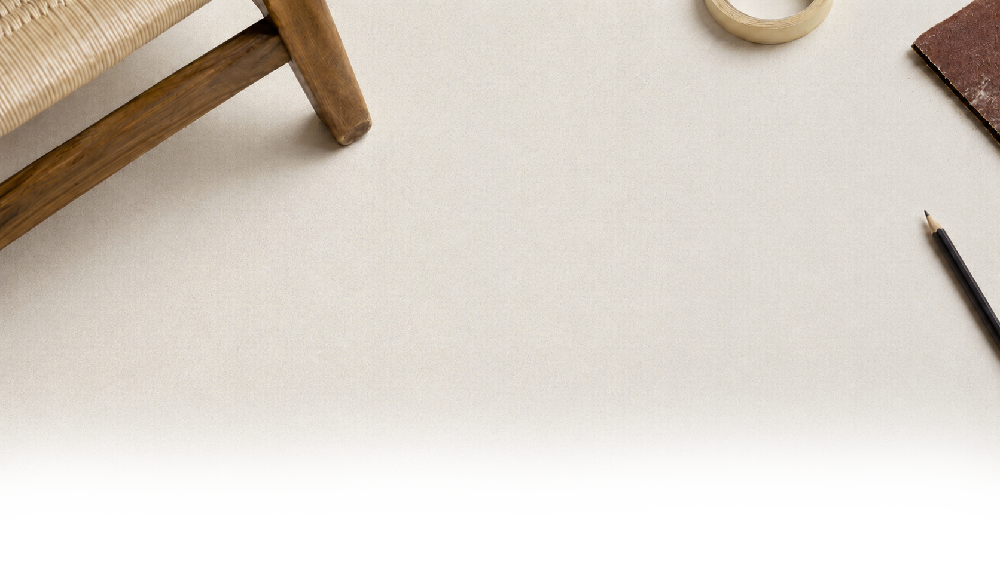
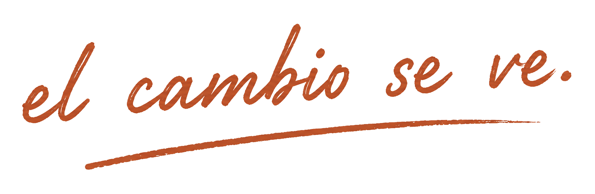
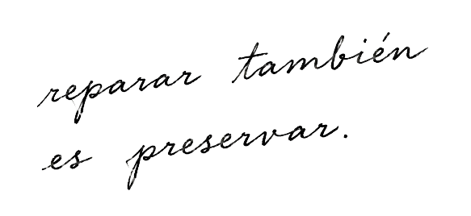
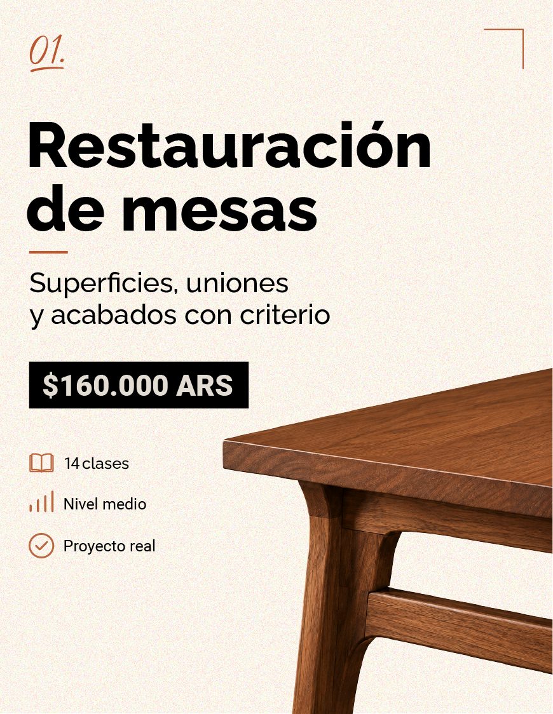
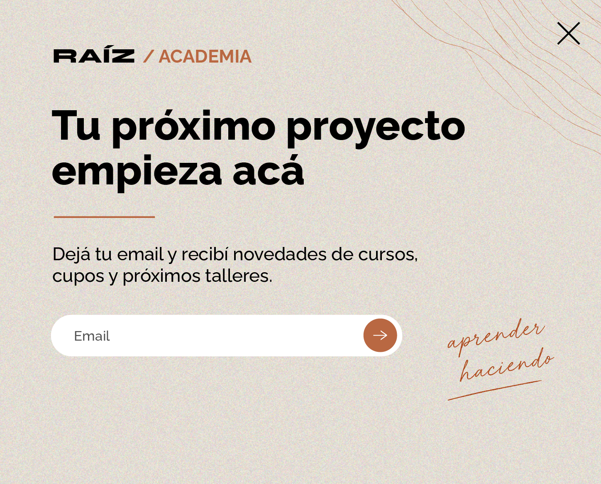
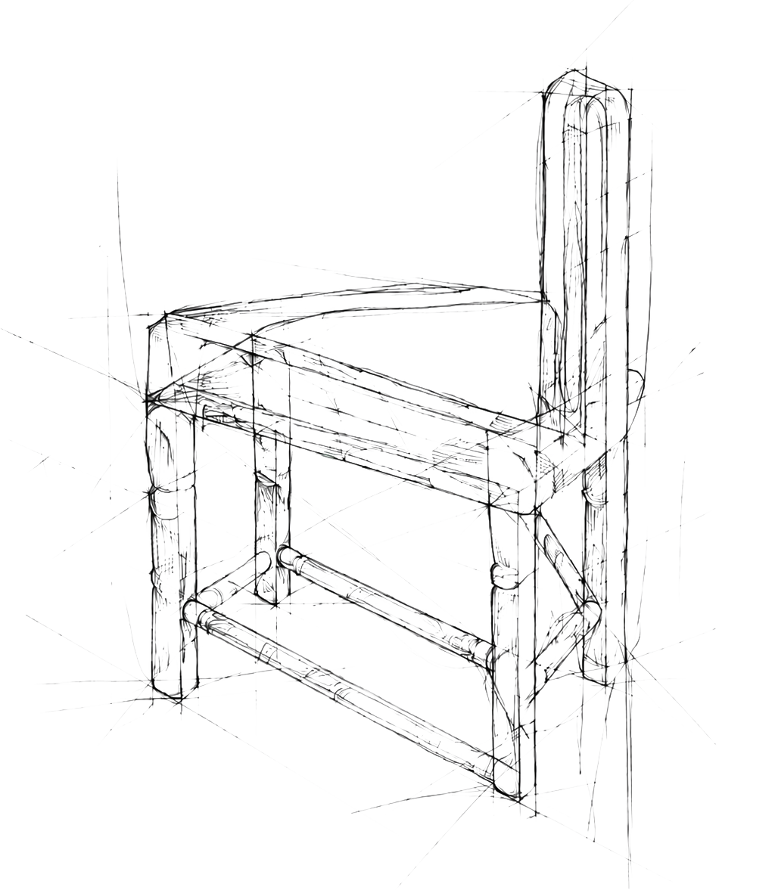
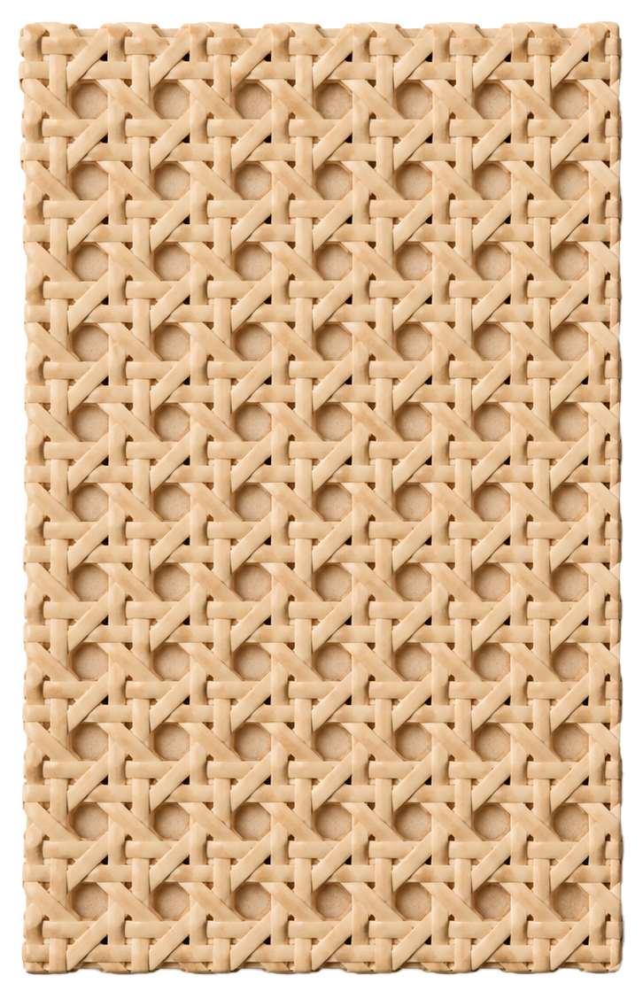
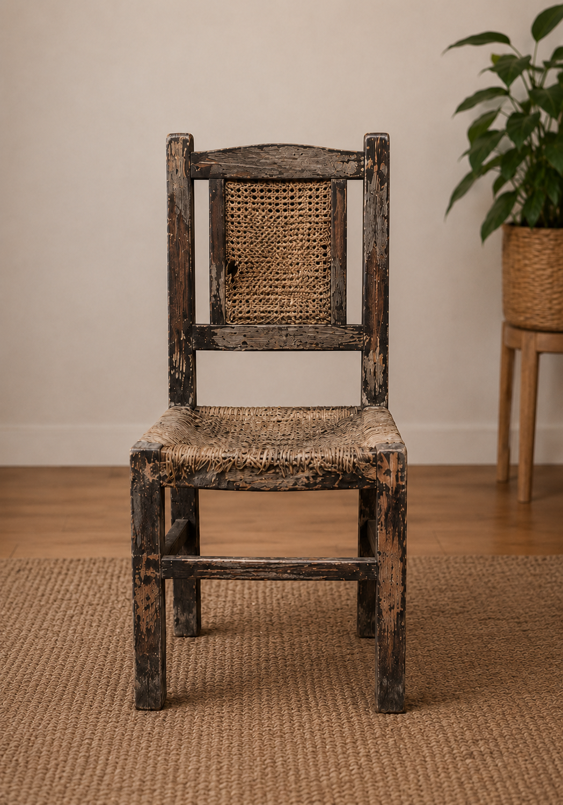
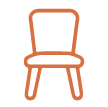
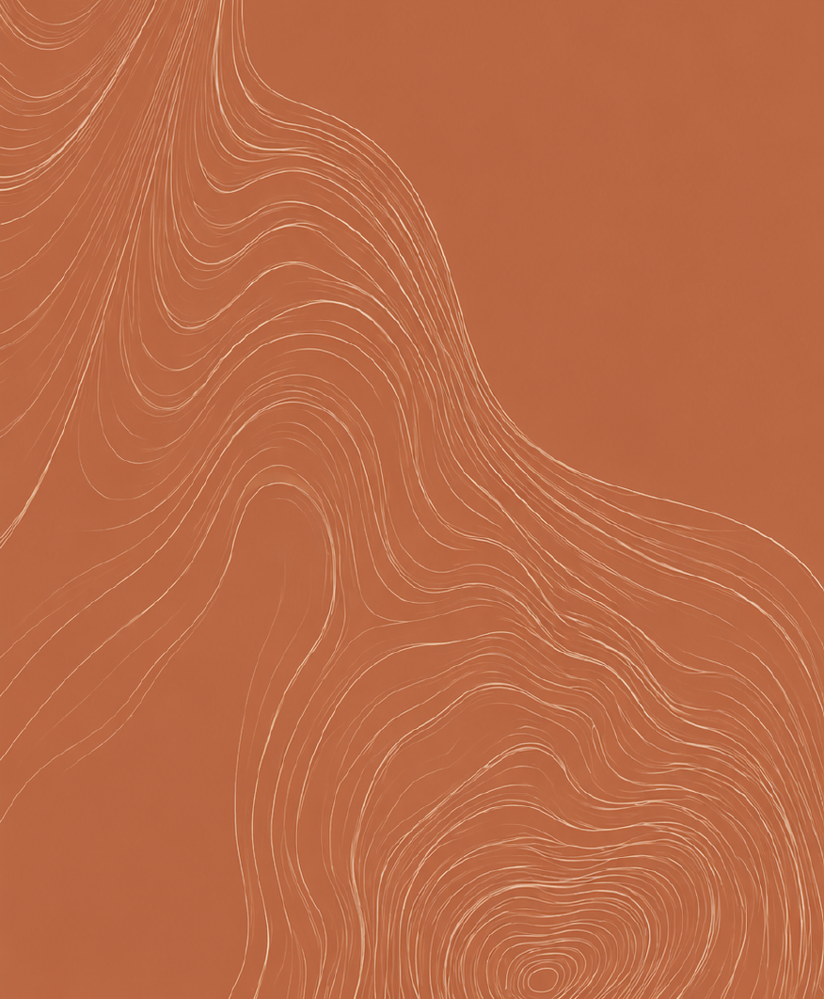

Papel cálido
#E2DCD3 · --paper
Fondos principales, zonas de lectura y separadores claros.

Biblioteca UI
Una guía viva con los colores, tipos, componentes, imágenes y gestos que construyen la identidad actual del sitio.
Paleta
La paleta sostiene el contraste entre oficio y diseño: base clara texturada, negro editorial y terracota como acento de acción.
#E2DCD3 · --paper
Fondos principales, zonas de lectura y separadores claros.
#070707 · --ink
Títulos, bloques oscuros, botones principales y alto contraste.
#B7643E · --orange
CTAs, titulares secundarios, controles y detalles manuscritos.
#F2ECE3 · --cream
Tarjetas, popup, inputs y superficies elevadas.
#5B544D · --muted
Bajadas, descripciones, placeholders y metadatos.
Tipografías
RAÍZ combina marca de alto impacto con Raleway en pesos fuertes para titulares, controles y textos de lectura.
Marca RAÍZ · Syne ExtraBold
RAÍZDiseño moderno
Transformamos muebles con historia en piezas contemporáneas.
Una selección de texturas, tonos y terminaciones que usamos para transformar cada pieza sin borrar su origen.
EXPLORAR MATERIALES →



Botones y enlaces
Los botones reales usan texto en mayúsculas, peso alto, microinteracción vertical y foco visible. Los enlaces textuales avanzan con flecha.
Componentes
Muestras reducidas de cards, datos, testimonios, profesores, preguntas y popup, usando las clases del sitio como base.

Ver cursoNivel:Inicial-medio
Duración:4 semanas
Modalidad:Teórico-práctica
Llegué sin saber por dónde empezar y terminé entendiendo cada parte de la silla. Me gustó que no se trató solo de reparar, sino de tomar decisiones con criterio.
.png) Lucía Ferraro
Lucía Ferraro
No. La experiencia está pensada para acompañar el proceso desde el diagnóstico hasta el acabado final.

Imágenes
Las imágenes combinan producto aislado, texturas de material, comparaciones de proceso y composiciones tipo collage.




Antes Después


Iconografía
Los iconos funcionan como síntesis: trazo negro, detalles en naranja y lectura clara sobre fondos claros u oscuros.




Recursos gestuales
Los gestos aparecen como acento: frases manuscritas, vetas, subrayados, etiquetas y fondos que recuerdan el taller sin volverlo antiguo.
